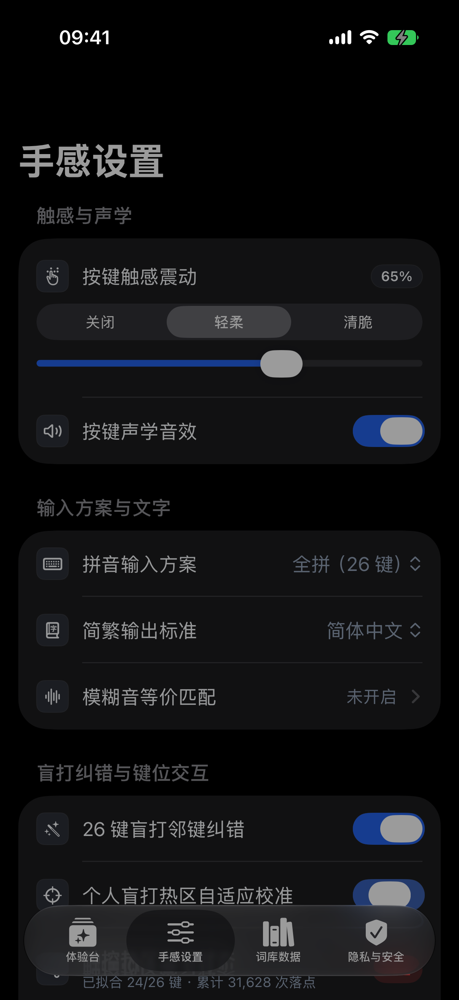

原生手感，零学习成本。
物理零联网的 iOS 中文输入法。
1:1 延续 iOS 26 原生手感与键位几何，零学习适应成本；内置自研「落墨 · Inkstone」输入引擎（26 键盲打热区自适应校准、双向神经网络长句语义、句内中英混输、OpenCC 词级简繁与本地自造词记忆），源码与二进制均不含任何网络框架或数据采集。
换过来就会用：为什么说 Lokey 零学习成本？
第三方输入法最劝退的往往是微偏的键位比例与陌生的交互规则。Lokey 先 1:1 复刻系统原生键盘的肌肉记忆，再把触感调校与纠错能力悄悄做透。
快捷手势
原生交互原生系统规格对齐
iOS 26不联网，也能默默贴合你的拇指与语境
点击下方「26 键盲打热区云图」的任意按键查看真实偏移拟合方式，或切换右侧场景查看纯离线整句解码效果。
26 键盲打热区云图
示例预览 · 2×2 协方差高斯校准 · 上限 ±20%落墨 · Inkstone 离线解码
全拼 · 小鹤/自然码双拼 · OpenCC 简繁精准捞回邻键误触，严守干净输入不误改
快速盲打时 d/f 邻键极易带偏（renduomeishi 误敲为 renfuomeishi）。落墨引擎融合真实键帽几何坐标 (x, y) 与端侧 LNLM-v2 语义重排，将「renfuomeishi」直接拉回首选「人多没事」，同时支持双指换位、漏敲补全与胖手指多按滤除。
输入方案与 OpenCC 词级简繁
全拼/小鹤/自然码即时切换 · 简体规范存储极客细节开关与模糊音
按顺手程度独立定制 · 不强迫任何改动落墨 · Inkstone 端侧离线引擎流水线
从物理触控落点到 120Hz 异步上屏的全链路纯本地计算克制纯粹，遵循原生系统语言
零开屏广告、零冗余弹窗，完整的手感调校、盲打热区可视化、词库热挂载与个人词条管理全部内置。

手感与盲打调校（浅色模式）
0%–100% 无级震动滑块、全拼/小鹤/自然码切换与 26 键个人热区开关。

夜间深色适配（深色模式）
完整适配 iOS 26 深色外观与液态玻璃底栏，夜间调校不刺眼。

零拷贝词库与 .lokeypack 热挂载
实时查看只读 mmap 词库规模，支持外部 .lokeypack 热挂载与个人 Rime 词表管理。
为什么选择 Lokey：原生、云端第三方与 Lokey 对比
既不牺牲系统键盘多年积累的手指肌肉记忆，也不用把日常隐私交给黑盒联网服务。
| 对比维度 | Lokey | iOS 系统自带 | 传统联网第三方 |
|---|---|---|---|
| 物理零联网与可审计 | 0 网络框架 / 0 Socket · 核心源码字节级公开 | 系统闭源组件 | 普遍联网与云端候选 |
| 关闭「允许完全访问」 | 26 键全拼整句、内置词库与盲打纠错 100% 离线可用 | 系统内置权限 | 功能降级或无法同步 |
| iOS 26 原生手感 | 1:1 液态玻璃几何，零学习适应成本 | 原生手感基准 | 键位比例与动效常有偏移 |
| 盲打纠错与热区学习 | 26 键 2×2 高斯可视化热区 + 双向神经重排 | 黑盒纠错 · 无个人热区视图 | 多依赖云端模型纠错 |
| 外置词库与数据迁移 | 只读 mmap .lokeypack + Rime 双向迁移 | 封闭词库 · 不支持导入 | 多为专有云账号同步 |
| 商业模式与隐私边界 | 零广告 · 零订阅 · 核心打字永久免费 | 系统附带免费 | 常见皮肤广告或会员订阅 |
不是口头承诺隐私，而是二进制里没有联网代码
18 份核心引擎与键盘扩展 Swift 文件在 Lokey-Audit 字节级公开，欢迎亲自运行源码扫描与 Mach-O 符号审查。
100% 物理零联网承诺
无网络框架、Socket 系统调用或远端遥测
默认 26 键全拼整句、内置纯净词库、盲打邻键纠错与 Emoji 联想 100% 离线生效
仅用于本机 App Group 同步小鹤/自然码双拼、OpenCC 简繁、模糊音与手感设置、SQLite 自造词、外部 .lokeypack 与震动音效；安全输入框（isSecureTextEntry）自动隔离
# 1. 源码、Info.plist 与 Entitlements 零联网扫描
git clone https://github.com/Kianuni/Lokey-Audit.git
cd Lokey-Audit
./scripts/audit_zero_network.sh --source-only
# ✓ Source scan passed (0 network frameworks / 0 socket calls)
# 2. 编译产物 Mach-O otool -L / nm -u 符号审查与 XCTest
python3 scripts/build_demo_lexicon.py
python3 scripts/generate_xcodeproj.py
xcodebuild test -project LokeyAudit.xcodeproj -scheme LokeyAudit \
-derivedDataPath build/DerivedData \
-destination 'platform=iOS Simulator,name=iPhone 17 Pro'
./scripts/audit_zero_network.sh build/DerivedData
# ✓ 0 URLSession / NWConnection / CFNetwork / socket symbols自带纯净基础词库，亦支持 55.3 万词白霜扩展热挂载
外置 .lokeypack 是纯粹的被动静态二进制数据文件；通过「文件」App 或隔空投送导入后在本机校验 SHA-256，并以零拷贝只读 mmap 热挂载，随时一键切回内置词库。
de32f3c0e561026752e56392c2cd5cdd912a73424da2ff9b9fae80d04d4ee348
本机 SQLite 自造词记忆机制
只记常用好词 · 不被误选词长期干扰数据主权与 Rime 双向迁移
纯离线导出带走一切积累 · 零厂商锁定核心打字体验永久免费，绝不阉割基础手感
不做订阅制、不强制注册账号、不插播广告。所有日常输入所需核心能力对全部用户免费开放，仅高效扩展工具采用一次性买断。
核心体验 · 永久免费
零广告 · 零账号 · 开箱主力可用不设任何“试打字数限制”或弹出广告，装好即可完整作为日常主力中文键盘：
- 26 键全拼、小鹤双拼与自然码双拼完整支持
- 内置 50.6 万+ 纯净基础词库、端侧双向神经整句与盲打邻键纠错
- OpenCC 简体 / 台灣正體 / 香港標準词级实时切换与自定义模糊音
- 日常自动记词、主应用查看删改与候选栏长按一键忘词
- CoreHaptics 无级线性震动、三档原生按键音与物理级零联网隔离
Lokey Pro 永久解锁
纯本地效率进阶 · 买断制独立软件
关于隐私、手感与词库的几个直接回答
1. 不开启「允许完全访问」能用哪些功能？开启后会偷偷联网吗？
关闭「允许完全访问」时，默认的 26 键全拼整句、内置纯净词库、盲打邻键纠错与 Emoji 联想已 100% 离线可用。如需在主应用切换小鹤/自然码双拼、OpenCC 繁体输出、模糊音与手感开关，或启用本机 SQLite 自造词、外部 .lokeypack 热挂载与 CoreHaptics 震动，需开启该权限以允许本机 App Group 共享容器跨进程读取——因为宿主与键盘扩展的源码及二进制中均不含任何网络框架或 Socket 符号，开启后依然物理上不具备联网能力。
2. 目前支持哪些 iOS 屏幕尺寸与拼音方案？切过来需要学新手势吗？
支持 Max/Plus（268.5pt）、Pro/标准（250.0pt）、Mini/SE（239.0pt）与横屏（197.5pt）四档屏幕自适应高度，内置 26 键全拼、小鹤双拼与自然码双拼。手势与光学布局沿用 iOS 原生肌肉记忆（如长按空格移光标、左滑 ⌫ 清空待上屏句、数字时间自动半角），几乎零适应成本。
3. 完全不联网怎么做到长句识别和盲打纠错？会不会耗电或内存闪退？
所有词典索引与轻量化端侧模型均随安装包或本地 .lokeypack 以只读 mmap 零拷贝方式挂载，不解压占堆内存、稳居 iOS 键盘扩展严苛内存上限之内；落墨引擎结合 26 键触控坐标、前向/逆向双向神经重排与 64 维话题记忆全部在本地 CPU 高效运行，无后台网络唤醒耗电。
4. 如何导入 55.3 万词白霜扩展包或我自己的 Rime 词库？
从 Kianuni/lokey-frost-pack 下载预编译 rime-frost.lokeypack（或用自带零依赖 Python 3 编译器配合 --extra-dict 自行打包）存至 iPhone「文件」App 或隔空投送，选择「用 Lokey 打开」或从「词库数据 → 导入外部 .lokeypack」选取即可本机校验挂载；Rime .dict.yaml / .userdb.txt 也可在「个人词库」中纯离线导入。
5. 怎么自己独立验证 Lokey 真的没有任何联网代码？
Kianuni/Lokey-Audit 仓库中 Shared/Engine（12 个文件）与 KeyboardExtension（6 个文件）保持 100% 字节级一致。你可以在 Mac 终端克隆仓库运行 ./scripts/audit_zero_network.sh --source-only，并用 xcodebuild test 编译出产物后运行 ./scripts/audit_zero_network.sh build/DerivedData，或亲自执行 otool -L 与 nm -u 核验全部导入符号。